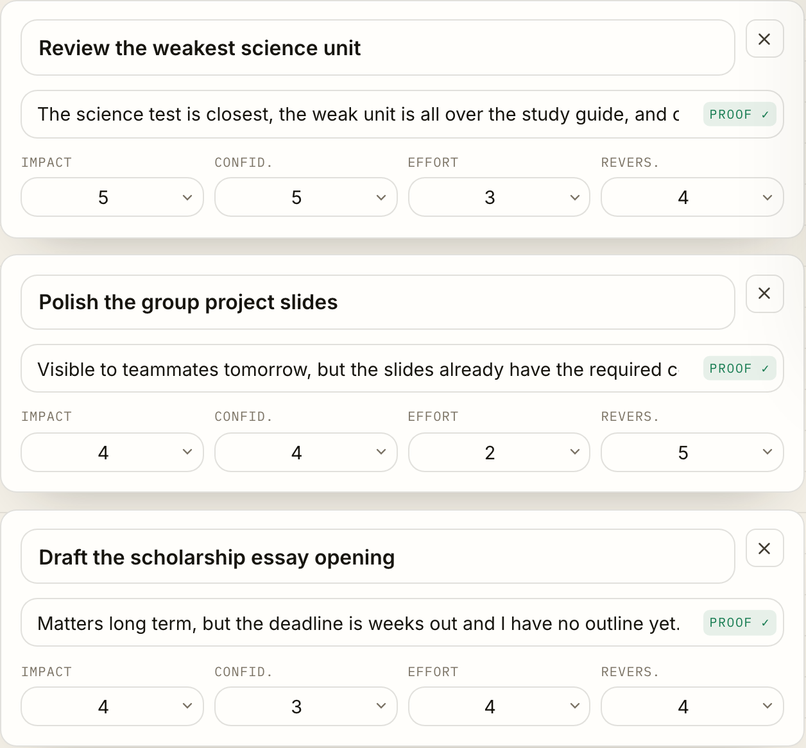
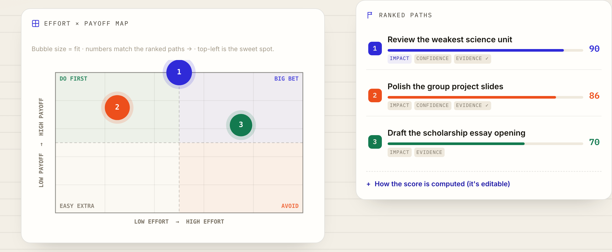
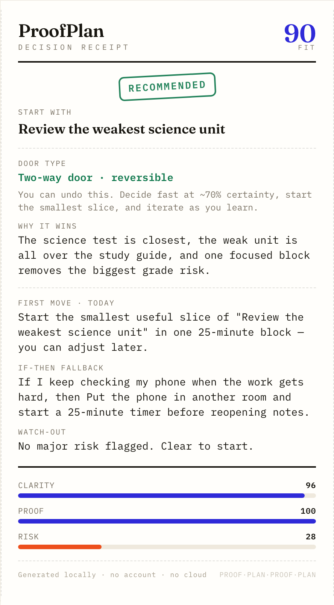
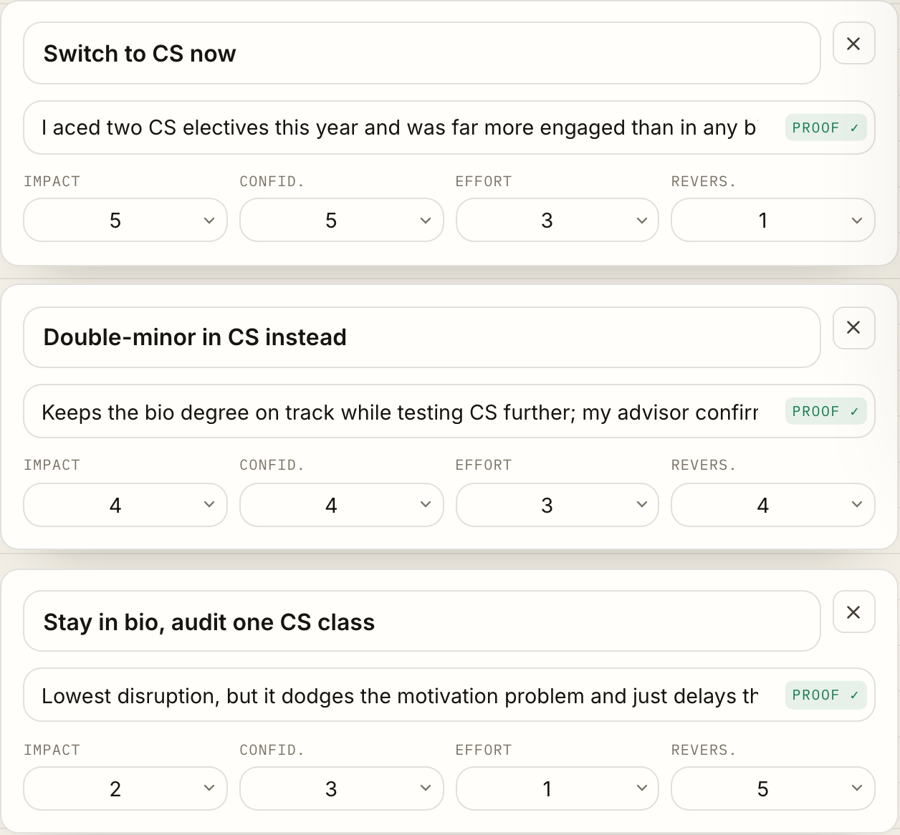
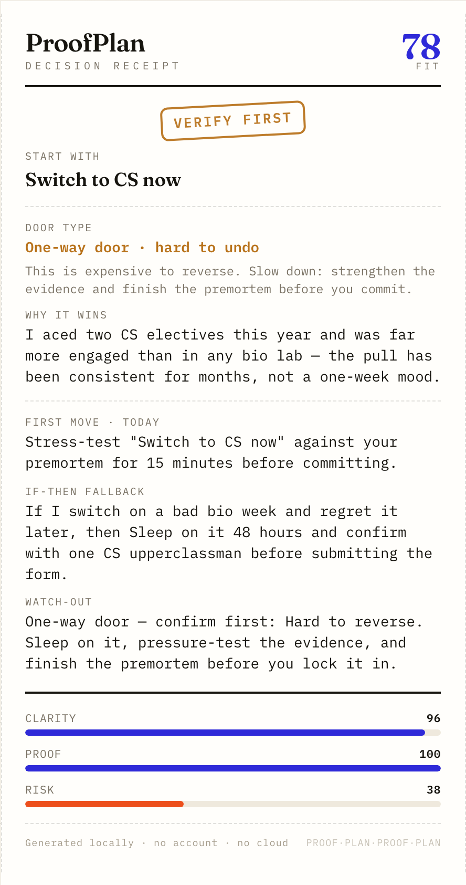
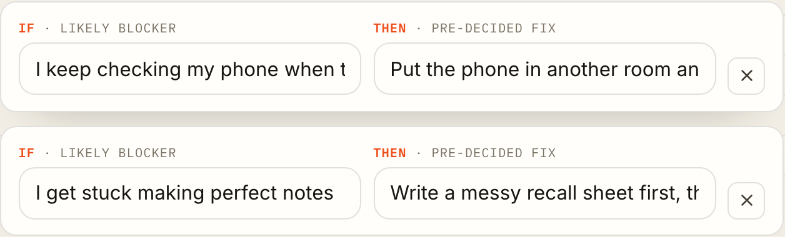

The glass-box decision engine
A decision engine for students — pick one path when everything feels urgent, and walk away with proof.
The moment
Compare your real options with evidence — not vibes.

The glass box

The artifact

It reads the stakes
Switching majors is hard to undo. ProofPlan flags reversibility before you commit.
⚠ “Switch to CS now” · reversible 1 / 5 · hard to undo
It changes posture
For a reversible choice it says “decide fast.” For a one-way door, it tells you to slow down and prove it.
Bezos one-way / two-way door test
The plan survives contact

Decide. Prove it. Start today.
Runs 100% in your browser — no account, no cloud.
Transparent scoring you can see and challenge · github.com/<you>/proofplan